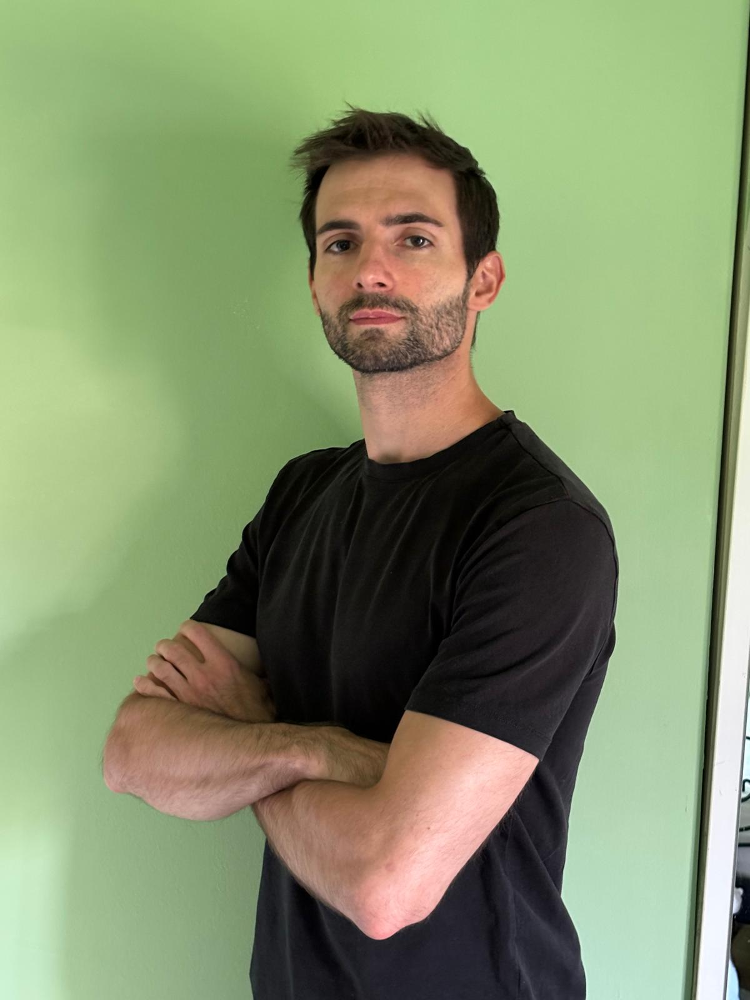
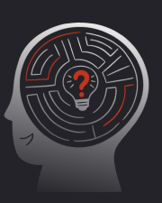
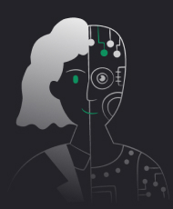
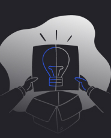

products make sense

2026 feb-jun / Idomsoft
2018 – 2020 / Apptum
2010 – 2016 / BME, Budapest
German / B1
Hungarian / native
Daily driver. UI design, prototyping, design systems and developer handoff.
Responsive website design, interactive prototypes and production-ready publishing.
Interviews, qualitative analysis, insight synthesis and research documentation.
Remote usability testing and quick validation loops.
Journey mapping, service blueprints, research synthesis and stakeholder workshops.
Early-stage ideation, workshop exercises, user flows and collaborative mapping.
Image editing, vector graphics, motion design, visual assets and presentation refinement.
Research synthesis, concept exploration, content structuring and faster design iteration.

Human behaviour
I'm interested in the mechanisms behind human judgement and behaviour: how people interpret information, form mental models and make choices with limited attention. Personality, motivation, cognitive biases and context often explain the gap between what people say, intend and actually do.

AI & Digital systems
I'm interested in AI not only as a design tool, but as a new layer within products and services — one that changes how people access information, make decisions and interact with complex systems. The central design challenge is defining where automation adds value, where human judgement should remain, and how a product communicates uncertainty, control and responsibility.

Future concepts
I'm drawn to questions that sit beyond immediate product roadmaps: how changes in technology, behaviour and society could create new needs, interaction models and services. I look for weak signals and connections across different fields, but treat them as inputs for structured exploration rather than predictions.